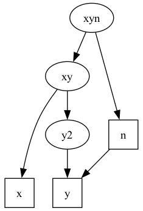

Generate site patterns by coalescent simulation
legosim: coalescent simulations within a network of populations
usage: legosim [options] input_file_name
where options may include:
-b or --branch_length
print branch lengths rather than probabilities
-i <x> or --nItr <x>
number of iterations in simulation
-1 or --singletons
Use singleton site patterns
-d <x> or --deterministic <x>
Deterministic algorithm, ignoring states with Pr <= x
--network
Print summary of population network and exit
--plot <filename> or -p <filename>
Create a dot-format file for plotting the network.
-U <x>
Mutations per generation per haploid genome.
-h or --help
print this message
--version
print version and exit
Options -i, --nItr, and -U cannot be used with --deterministic.
Option -U cannot be used with -b or --branch_length.
Here, "input_file" should be in .lgo format, which describes the history of population size, subdivision, and gene flow. The output looks like this:
#######################################
# legosim: site pattern probabilities #
# version 2.0.1-12-gf241700-dirty #
#######################################
# Program was compiled: Nov 21 2020 10:15:39
# Program was run: Sat Nov 21 10:17:57 2020
# cmd: ./legosim -1 -d 0 input.lgo
# input file : input.lgo
# algorithm : deterministic
# ignoring probs <= : 0
# including singleton site patterns.
# SitePat Prob
x 0.1560242402
y 0.1481456533
n 0.4023561523
x:y 0.2854101359
x:n 0.0000926157
y:n 0.0079712026
Here, the "SitePat" column labels site patterns. For example, site pattern xy (denoted by "x:y" in this output) refers to nocleotide sites at which the derived allele is present in single haploid samples from X and Y but not in samples from other populations. The probability of this site pattern, under the model of history specified in file input.lgo, is given in the "Prob" column. When the -d or --deterministic options are used, these probabilities are calculated by a deterministic algorithm.
In the example above, I used -d 0, which tells legosim to ignore only those states with probability 0. Thus, the answers will be extremely accurate. When neither -d nor --deterministic are used, the probabilities are estimated by coalescent simulation.
Ignoring states of low probability
The deterministic algorithm sums across all possible histories of the samples defined in the .lgo file. The number of histories increases rapidly with sample size and with the number of migration events. For larger models, it is not feasible to use -d 0. However, one can still use the deterministic algorithm to obtain an approximate answer, using an argument such as -d 1e-6. This tells legosim to use the deterministic algorithm while ignoring states whose probability is less than or equal to 1e-6. Nonzero arguments to -d will introduce bias. To evaluate the magnitude of this bias, compare the results to those obtained using the stochastic algorithm or (where feasible) the deterministic one with -d 0.
When the deterministic algorithm is used, legosim prints a line of output that looks like this:
# Summed probability of ignored improbable events: 3.515617e-04
This "summed probability" can exceed 1, because it sums across several probability distributions. Nonetheless, when it is small, that is an indication that we have not ignored much of any of these distributions. To rexpress this as a fraction of the of the total probability mass, run legosim with argument -d 1. This ignores all events, so the summed probability of ignored events will be an integer, which equals the number of probability distributions involved. Divide the original summed probability by this number to express it as a fraction of total probability mass.
Simulating site pattern counts
To simulate site pattern counts across an entire genome, use the -U option, whose argument give the expected number of mutations per generation per haploid genome. This argument should equal 
#######################################
# legosim: site pattern probabilities #
# version 1.89 #
#######################################
# Program was compiled: Oct 22 2020 22:30:28
# Program was run: Fri Oct 23 12:35:53 2020
# cmd: legosim -1 -i 10000 -U 18 input.lgo
# input file : input.lgo
# algorithm : stochastic
# nreps : 10000
# mutations per haploid genome: 18.000000
# including singleton site patterns.
# SitePat Count
x 4
y 1
n 8
x:y 5
x:n 0
y:n 0
Now, the 2nd column is labeled "Count" rather than "Prob" and gives the simulated count of each site pattern across the genome as a whole. It is calculated by sampling from a Poisson distribution with mean
Printing a summary of the network of nodes
Use the --network option to print a summary of the network of nodes. As an example, let us use the following file, which is called toy.lgo:
# Toy .lgo file time fixed zero=0 twoN fixed one=1 time free Txyn=25000 # archaic-modern separation time time fixed Tn=2000 # time of Neanderthal admixture time fixed Txy=4000 # Africa-Eurasia separation time twoN free twoNn=1e3 # archaic population size twoN free twoNxy=1e4 # early modern population size mixFrac free mN=0.02 # Neanderthal admixture into y segment x t=zero twoN=one samples=1 # Africa segment y t=zero twoN=one samples=1 # Eurasia segment n t=Tn twoN=twoNn samples=1 # Neanderthal segment y2 t=Tn twoN=twoNxy # pre-mig eurasia segment xy t=Txy twoN=twoNxy # early modern segment xyn t=Txyn twoN=twoNn # ancestral mix y from y2 + mN * n # y is a mixture of y2 and n derive x from xy # x is child of xy derive y2 from xy # y2 is child of xy derive xy from xyn # xy is child of xyn derive n from xyn # n is child of xyn
At the command line, type legosim --network toy.lgo. This produces output that ends with:
xyn: twoN=1000 ntrval=(25000.000000,inf) children: xy n |xy: twoN=10000 ntrval=(4000.000000,25000.000000) | parents: xyn | children: x y2 ||x: twoN=1 ntrval=(0.000000,4000.000000) || parents: xy ||y2: twoN=10000 ntrval=(2000.000000,4000.000000) || parents: xy || children: y |||y: twoN=1 ntrval=(0.000000,2000.000000) ||| parents: y2 n |n: twoN=1000 ntrval=(2000.000000,25000.000000) | parents: xyn | children: y Samples: 0 x 1 y 2 n
The first line of output tells us that xyn is the root segment, that its population is twoN=1000, and that is spans an interval ranging from 2500 generations ago to infinity. The second line tells us that it has two "children", segments xy and n. The children and their children are described in the lines that follow, preceded by "|" characters to indicate the depth of nesting.
Plotting the network
To make a graph of the network, use the --plot <f.dot> option, where f.dot is the name of the file to be written as output. If that file already exists, it will be overwritten. This output file is written in the .dot format used by GraphViz to describe directed graphs. I ran legosim --plot toy.dot toy.lgo, which produced toy.lgo, an output file that looks like this
digraph {
ratio = 1.5;
margin = 0;
x [shape=square];
y [shape=square];
n [shape=square];
{ rank = same; x -> y [style = invis]};
{ rank = same; y2 n};
xyn -> {xy n};
xy -> {x y2};
y2 -> y;
n -> y;
}
You can edit this file to tweak the resulting graph. In the first line, ratio = 1.5 sets the aspect ratio–the ratio of height to width, and margin = 0 says not to put white space around the graph. The "shape=square" lines ensure that segments with data are plotted with squares to distinguish them from segments without data. The line { rank = same; x -> y [style = invis]} says that x and y should have the same "rank" (vertical position) and that x should be to the left of right. Legosim emits a line like this so that all segments that end at time zero have the same rank and are plotted in the order that they appear in the .lgo file. The next line, { rank = same; y2 n} says that y2 and n are in the same rank but allows GraphViz to decide how to arrange them within that rank. The remaining lines describe the arrows to be drawn between segments.
To turn this input into a .png graphics file, type dot -Tpng toy.dot <blockquote>‍toy.png. This produces the graph shown below.

I often find it useful to edit the .dot file, adding lines to place segments in the same rank or to constrain their positions within a rank. To do this, just follow the conventions illustrated in the .dot file above.
- Copyright
- Copyright (c) 2025, Alan R. Rogers roger.nosp@m.s@an.nosp@m.thro..nosp@m.utah.nosp@m..edu. This file is released under the Internet Systems Consortium License, which can be found in file "LICENSE".
Generated on for Legofit by